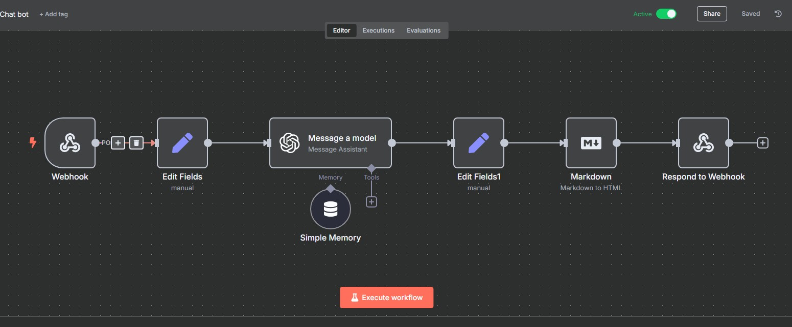
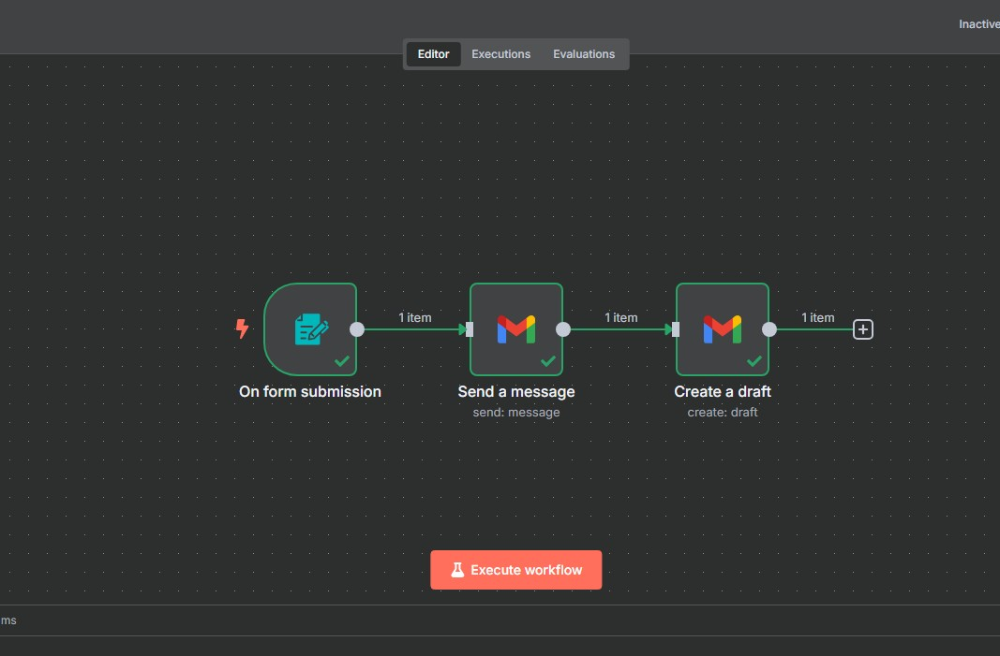

Welcome to My Website!
This website has a few different elements that bring it together. My HTML skills are pretty limited, but I wanted to showcase my ability to build something from scratch using AI tools. It was built primarily using OpenAI’s ChatGPT alongside other online resources.
- The chatbot on the left uses a combination of an n8n AI workflow and ChatGPT Assistant to answer questions about my work experience.
- The AI chatbot was designed with many prompts to constrain responses and provide relevant feedback.
- The HTML was primarily coded by ChatGPT, with myself guiding the structure and content.
How I Built This
This section outlines the architecture and automation behind this AI-powered interview assistant. The chatbot you see on the left is fully integrated with a back-end workflow powered by n8n and OpenAI’s Assistant API. I built this using no-code and low-code tools that allow for dynamic, context-aware interactions with recruiters, hiring managers, and others exploring my qualifications.
Chatbot Integration (n8n + OpenAI Assistant)
The chatbot was built leveraging the n8n AI workflow integration as shown above. The workflow ingests questions from users in the front-end, uses the Webhook integration from n8n to route the message to OpenAI, then parses and returns an intelligent reply—constrained by assistant instructions that ensure it only answers questions related to my professional experience.
- Front-end JavaScript captures user input and sends it via POST to an
n8n.cloudwebhook endpoint. - n8n Webhook node triggers a flow that forwards the request to OpenAI’s Assistant API using the HTTP Request node.
- OpenAI Assistant has been preloaded with structured prompt instructions focused on my resume, experience, and interview scheduling only.
- The response from OpenAI is captured, parsed, and returned back to the front-end chatbot.
- Context is preserved with a session ID passed from the browser to maintain conversation continuity.
Email Automation Workflow
When a user completes the interview request form, their submission triggers an automated email workflow inside n8n. This process ensures prompt delivery of structured interview request details to my inbox and logs the response for tracking.
- The form is hosted via an n8n Form Trigger and posts structured data to a flow.
- The data is mapped into a formatted email using HTML or Markdown templates.
- Emails are dispatched using n8n’s built-in Gmail or SMTP node for delivery.
- Data can optionally be logged into Airtable, Google Sheets, or Notion for recordkeeping.
- Each submission includes context like company, interview request type, and preferred time block.